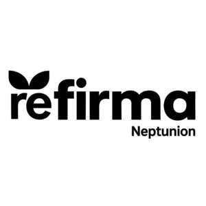

Trade Mark Journal No.2025/041 10 October 2025
UK00004234672 16 July 2025 (1)

- Class 1
- Biostimulants for plants being plant growth stimulants, yield enhancers, and quality enhancers; biostimulants being plant nutrition preparations; substances for regulating plant growth in the nature of plant growth-promoting microbes; chemicals for use in agriculture, horticulture and forestry except fungicides, herbicides, insecticides and parasiticides; fertilizers; natural fertilizers; organic fertilizers; adjuvant for use with agricultural chemicals; soil conditioning preparations for enhancing the growth of agricultural products; soil conditioning preparations for enhancing the growth of horticultural products; plant nutrients; preparations for fortifying plants; substances for regulating plant growth; chemical preparations for preventing pathogenic infections in plants; chemical fertilizers; plant growth nutrients for agricultural use; auxiliary fluids for use with additives for fungicides, namely, vine disease preventing chemicals; seed coating applied to corn, soybeans, wheat and alfalfa seeds to improve stands, seedling health and yield; chemical preparations for use in agriculture, horticulture and forestry, namely, chemical preparations for the treatment of seeds; chemical compositions for use in coating on agricultural seeds, namely, silage preservative chemical compositions; agricultural biostimulant preparations for alleviating biotic and abiotic stresses in plants; nutritive additives to enhance the biological activity of water, soil, seeds and plants for purposes of fertilization and bioremediation of pollutants.
The Mosaic Company
Representative: ULRICH DR BREIT